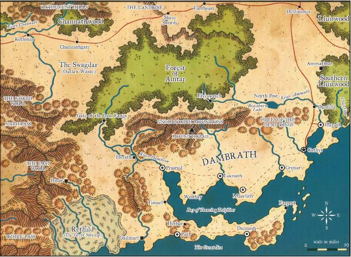

丹布拉斯（Dambrath）
对外人而言，丹布拉斯是一个矛盾的地区。它的人民居住在一片有着酷热太阳的天空之下，但却忠于害怕阳光的卓尔。虽然当地人口的主要构成是人类，但却被克林提人（Crinti） — 一种混合了卓尔和精灵血统的人所统治。该国家主要靠陆海交易获利。且由于其领导采取的令人惊异的对邻国的非侵略性政策和他们对外人深入国境的厌恶，丹布拉斯对大部分费伦人而言仍是一片神秘的土地。而这种状况正合当地贵族阶级之意。

地理总览
丹布拉斯从西端与哈鲁阿（Halruaa）的边境东墙山（East Wall）到东端的南鲁伊尔森林（Southern Liuirwood）横贯700余英里。其海岸线则有近两倍的长度，这是由于跳舞海豚湾（Bay of Dancing Dolphins）折入内陆的缘故。从海岸北到安塔森林（Forest of Amtar）有约300英里的纵深。然而丹布拉斯的主要居民区分部在将国土分为南北两块的豺狼人岗哨山脉（Gnollwatch Mountains）和死王丘陵（Hills of the Dead Kings）以南。丹布拉斯也在安塔森林以南，沿着前往德尔齐莫（Delzimmer）的商道划有一些额外的土地。瑞西尔德（Rethild），又被称为大沼泽（Great Swamp），在表面上也是丹布拉斯的一部分，然而那里的治理者仅仅在名义上占有那些土地，因为生活在那里的蜥蜴人和纳珈会阻碍一切实质性控制的企图。
除了从腐败之月（Uktar，即The Rotting）中旬开始并持续2-3个月的雨季，丹布拉斯的气候是压迫性的炎热。在豺狼人岗哨山脉区域以南，白昼是酷热的，但由于大海（Great Sea）上吹来的风会迅速冷却空气，所以那里的夜晚是相当舒适的。在山脉以北，气温甚至更热，而空气沉闷粘稠。那里降雨变得愈加频繁，使安塔森林成为了一个如楚特人半岛（Chultan Peninsula）的丛林地带一般闷热的高湿度地区。大多数生长在乡村的人从没有见过雪，而除了在山上，早霜也基本是不存在的。
丹布拉斯大部分土地都有覆盖着非常适合养育马群的长草的开阔平原。这些翻滚的草原之海向着各个方向无尽地延伸。那些自给自足，投身于养育费伦最优秀坐骑的小型牧马场点缀着乡间的每一英里土地。大多数城市人口则居住于沿岸的贸易城市，特别是在跳舞海豚湾海滨。海湾水晶般清澈的海水维持着丹布拉斯的渔业和珍珠采集业全年的利润。
主要地理区域
丹布拉斯拥有两个独特的地理区域：跳舞海豚湾附近的海岸线和豺狼人岗哨山脉以北的内陆平原。居民们往往认为另一个大区不比邻接在居住地旁边的麻烦的荒地要好多少。就如丹布拉斯人喜欢说的，“远离荒野之道，荒野亦会远离你。”
跳舞海豚湾
被称为跳舞海豚湾的半封闭水体长度超过300英里。它囊括了丹布拉斯大部分海岸线，保护着国家内陆不受大海上的严酷天气的影响。海湾中大量的珍珠蚌和多种多样的野生鱼类也是丹布拉斯经济的关键因素。整个海岸上的渔民们每天都会满载旗鱼，笛鲷，鲈鱼以及其他鱼类而归。这些鱼大多数都会在本地销售以填补丹布拉斯的民众储备。而在海岸附近的浅滩，珍珠采集者们在深几十尺，透过海水却清晰可见的珍珠蚌养殖场中工作。商船在丹布拉斯和其他众多城市的港口之间来来往往，这股船流也成了那些时常出现在这片水域的，由贵族支持的海盗们的潜在猎物。
海湾内的海水显得不自然的平静，所以也有谣言说这里是被一些诡异的魔法保护故而没有风暴侵袭。事实上，尽管其中海岸地区时常受到风雨袭击，但是在过去至少500年时间里这里的水域都没有遭遇过风暴。而经常造访这里的船长们都知道当海豚的集结程度可以观测得到时，他们就不该冒险离开湾嘴。这些生物看来可以预感到将在一两天内迫近的风暴而提前寻找避难所。
即使在天气平静时，许多以海湾为家的海豚群也与一般所知的海豚有很大不同。每天黄昏，全海湾会有上千只海豚开始一种有趣而明显有组织性的“跳舞游戏”。当地人会在此时到海滩或冒险乘开放性甲板的大船出海观看这些跳舞的海豚。
在娱乐价值之外，这些海豚同时对防御水上灾害也很有意义。除了习性可以预报糟糕的天气，它们也将几乎所有的猎食者——诸如鲨鱼，巨乌贼和沙华人鱼（Sahuagin）——拒于海湾之外。它们还经常帮助溺水的游泳者（包括300多年前统治丹布拉斯的女王）。由于海豚们保护海湾的神奇能力，它们在丹布拉斯一直被尊敬和保护着。伤害海豚而被抓住的人将被拉维塔（Loviatar）的女祭司施与极端痛苦的刑罚。
许多学者都试图研究海豚并找出可能存在的保护着海湾的天气控制咒文。极少数一些人发现了一些飘渺而零散的魔法发散物，但没人可以由此判定其起源或效果。少数学者提出理论指出，保护海湾的魔法来源是一些居住在水面之下的高等智能生物，他们也出于某些原因组织并训练了海豚。
事实上，关于一个沉没在海湾中间的城市的传说已经流传很久。不少水手都报告过当太阳从正上方照亮清澈的深水时，可以看见水中的尖顶。但这些描述从来都不会两次说到同一个地方，而跟随而来搜索这个虚幻的城市的人总是无功而返。有些人认为那个城市是一个原本建立在陆地上的被遗忘的帝国的遗迹，被扭曲的魔法将它沉入海底，并因此形成了海湾。其他人则认为那个城市属于某些邪恶的水生生物，而那些生物正在等待着一个可以进攻丹布拉斯海岸的机会。在这个版本的传说中，海豚就是那些海底居民的同盟，它们表演舞蹈并救助溺水者只不过是为了营造安全的假像以麻痹地表居民。
真相处于二者之间。一个隐藏的城市的确存在于跳舞海豚湾的底部，而其居民是梭螺人鱼（Triton）。这些异界生物与阿卡因（Akaiun）部族十分友善，甚至一度进入了丹布拉斯的海岸线。两个种族偶尔会交易。但即使在那时，梭螺人鱼也一直小心保守他们的城市的存在的秘密，而冒险以小组接触海岸以和人类进行交易。数个世纪之前，由于一场关于珍珠价值的纠纷，梭螺人鱼们撤了出去，而人类部族也渐渐遗忘了他们。而当卓尔在地表泛滥并征服了阿卡因部族时，梭螺人鱼们甚至已经从传说中消失了。
梭螺人鱼门用信仰本族神嗣的牧师教团施放的法术有效地保守着城市存在的秘密。那些魔法用简单的置换法——让建筑物看上去像海湾深水中的其他景物——隐藏起了高墙和尖顶。那些牧师也是海湾中永恒的平静天气的造就者，而那些海豚则是他们的朋友和同盟。在梭螺人鱼城市的中心，有一个通向水元素位面的传送门。
安塔森林
安塔森林是一片繁茂，高湿度的近热带林地。常见延伸数里的苏斯木（suthwood）集结带将森林隔成了众多的小区域。而在这些集结带之间则充斥着影端树（shadowtop）和稍矮一些的松树，还有大量藤蔓，常春藤，荆棘等来自叶下层的植物，有时它们也会沿树干爬上树冠层。尽管阳光极少能直射透过森林的树冠层，多雨的气候和热带地理位置却使森林内部保持着潮湿和炎热，安塔森林从而成为大量飞虫和爬虫的理想孳生地。
安塔同样也是不少野生动物的家。鹦鹉等多种热带鸟类在这里的树上筑巢，而蜥蜴和蛇则生活在灌木层中。当地的哺乳动物有野猪和诸如老虎和豹子等危险的猎食者。猴子和猩猩家族也在树林里晃荡。但是其分布多聚集在森林的北半部分。而除了这些一般的动物，旅行者们还需对其他危险多家留心。巨大的蛇，蜥蜴和甲虫同样潜藏在森林的最深处，并且还有一些游荡的四臂猩猩（girallon）和凶暴猿（dire ape）群体。
一个被称为Trunadar，即“星之民（star people）”的野精灵部族以安塔南部为家。这个不超过500个成年人的部族以豺狼人岗哨山脉为屏障以保护自己不受丹布拉斯人的掠夺。他们居住在南边森林的中部，离东边的精灵岗哨（Elveswatch）聚落和西边被称为铁牙之门的遗迹都有一段距离。部族名义上的领袖Ferla Treerunner（混乱中立，男性野精灵，野蛮人8级/术士6级）偶尔会派遣一些劫掠队打击在精灵岗哨聚落附近的采伐行为。也有时，当克林提统治者们派遣军队进入森林试图吓走那些野精灵。但双方都不愿意在对方的主场将自己卷入真正的战争。
不少小型的强盗小组利用那里良好的掩蔽来逃避追捕，其中一些则盯上了森林边缘作为临时基地。后者时常潜伏在北部的边境，并在雷斯马（Rethmar）与德尔齐莫之间的马车道上“捕猎”。其中少数则躲藏在安塔的东部并瞄准了商道。厚实的丛林带让追捕变得极端困难，这也是由于那些盗匪永远比追捕者更熟悉横穿丛林的小径的缘故。
Tandith Tornears（守序邪恶，男性食人魔法师，野蛮人5级（L的居然不掉职业orz…………））就领导着一组强盗，这群人由人类和半兽人混杂而成，并得到两名食人魔的帮助。Tandith和他的奴仆们在岑纳斯盖特（Chennathgate）和兰菊斯（Landrise）之间道路旁的林区内游荡。那一带的树林边缘就在路旁，让伏击变得十分容易。三剑城（Three Swords）的人曾经几次试图去抓住Tandith的同伙，但都无功而返。最近，由于与金矮人交易的货物有相当一部分在劫掠中被盗，他们开始向大裂隙求助。而大裂隙的领袖也在考虑采取行动。
铁牙之门
铁牙之门是一个起源已经失落在时间的迷雾之中的古老城市，它曾经矗立在安塔森林的西南端。如今却只剩下了几根石柱，而藤蔓与腐霉已经爬过了那个城市每一寸过往荣耀的遗迹。
因夹着原本大门位置的那些歪斜的危塔而得名的铁牙之门在阿卡因人来到这里时就已经是一堆渣一样的废墟了。而从修长的双獠牙状大门和其他建筑方面的相似之处入手，那些详细研究过这个废墟的人们推断这里原来的主人和在南方建立伊立马尔（Ilimar）的文明相同。但无论这里的起源为何，明智的人都会避开这里，因为这里居住有有不少危险的生物。
一个庞大的豺狼人部族已经将此处划为己有并以此为基地四处劫掠，他们的行动范围向东南深入丹布拉斯境内, 北至岑纳斯盖特和雷斯马。T这些豺狼人的组织比其他同类更为完善，他们每次出击都会瞄准要地或富有的商队。大多数受害者相信那些豺狼人是与斯瓦达（Swagdar）的强盗一同“工作”。然而真相远比这要险恶。
几年前，一个名叫Quinix的迷诱魔（Glabrezu）找到了一个特殊的传送门可以从深渊危面直达这个城市的地下。以谎言和财物相诱，这个恶魔很快得到了豺狼人的忠诚。而现在，豺狼人们相信Quinix就是伊诺胡（Yeenoghu）的使者，他的出现说明它们是神所宠幸的仆从。Quinix从此也不时通过传送门带来两个弗洛魔以作为自己的助手和保镖。这名迷诱魔现在正处在这个废弃的城市的深处, 描绘着将混乱和邪恶带到着片土地上来的计划蓝图。
豺狼人岗哨山脉
豺狼人岗哨山脉在丹不拉斯的北半部分，东西横贯275英里，最终在东边便成为死王丘陵。豺狼人岗哨诸山并不很高—大多数山峰勉强达到9000尺，而山脉中最高的哈扎伊里山（Mount Hazail） 则高至11512尺。不过由于丹布拉斯大体上都接近海平面, 山脉与其南部的平原依然是对比鲜明。
豺狼人岗哨山脉在一年中有五个月被小雪覆盖，主要是在冬天和雨季。其他时间，松树，影端树和苏斯木等树木的深绿色树丛点缀在棕色的山坡草地上，而草地则主要是由南部平原上的短草形成。 在树带界线以上,这些深棕色的草则覆盖了光滑的圆形山顶。被南方海上不断吹来的暴风雨洗刷了无数个年头，豺狼人岗哨山脉已没有了费伦其他山脉的险峻陡峭。
正如其名，豺狼人岗哨山脉上有众多的豺狼人部落，他们滋生在洞穴遍地的林地坡面。大多数居住在山脚边的丹布拉斯人都认为那些豺狼人好斗而充满敌意，还在不断地榨取山上的资源，总而言之是个大麻烦。但是少数几个被认为在一个叫Grubash Blacksnout（LE雄性豺狼人，战士6级）的纪律性很强的首领领导之下的豺狼人部落对与相近的人类和克林提建立关系有着相当的热情。Grubash协调狩猎地域以使冲突减到最小，并策划让豺狼人作为贵族的佣兵。这些豺狼人佣兵为雇佣他们的大农场主对付其他豺狼人部落，有时也攻击雇主对手的农场，以这些工作换取肉类和银器。
一些山丘巨人在高一些的山坡上居住，并与豺狼人部落竞争猎场。这些巨人偶尔会转向死王丘陵，有时候也会进入草原并从人类的牧场中找食物。（他们这么做通常是为了美味的马肉。）在豺狼人岗哨最高峰旁的一个偏远峭壁中，有一个属于某个风暴巨人家庭的城堡。家长Abinor Lashingwind（CG男性风暴巨人，术士7级）为了让家庭在丹部拉斯人和卓尔的威胁之下得以保全而费尽心血。那些山丘巨人由于知道招惹那些更大的巨人的怒火没什么好处，所以也都不敢触碰他们。为了吓退那些异族的不速之客，Abinor造出了一些“证据”说明有一条坏脾气的巨大银龙居住在那山峰之中，关于这只野兽的传闻一路传到海岸甚至到了邻国鲁伊壬（Luiren）。
大量的银沉积在山脉之中，开矿者们每年都能发现不少新矿脉。这些挖出来的矿石让丹布拉斯人变得富有起来，而当地人也无视那些怪物和恶棍的威胁而不断有效地在整个山脉中探矿。有些较大的矿业同盟雇佣竞争的矿业单位 — 甚至更不友好的豺狼人部落 — 以达成他们的计划，以冒最小的风险产出最大的利益。
卓尔城市提林德特（T’lindhet）坐落在豺狼人岗哨山脉之下，离地表有几英里的垂直距离。由于卓尔们对地表部分土地作了一些无实际意义的所有权宣告，所以由丹布拉斯通向地中的路不像大多数幽暗地域与地表世界的通路，而是一条公共的商道。连接着两个国度的通路穿过贺拉斯（Herath），沿着山脉西方进入南边山脚，并在那里进入一个大洞穴。在那里， 通道向下通过一段人工隧道直入卓尔城邦。众多从地表其他入口来的小路也汇入了通道，但由于卓尔们不常用到这些路，他们也就没有费力气去清理那里面的怪物。
死王丘陵
这个由缓坡和草地覆盖的小山组成的地带一度被称为王者丘陵（Hills of the Kings）。但当阿卡因被卓尔和他们那些意料之外的盟友 — 劳薇塔的祭司们（见后，丹布拉斯历史） — 所征服之后，这里的名字也随之改变了。尽管名字有些死气沉沉， 丘陵地带却是舒适而相对安全的，当然，除了当那些从西方山脉来的巨人四处游荡的时候。分散的松树丛和少量的影端树点缀在四处分布的长满草的小山，但树在丘陵却相当稀少。 无数溪流蜿蜒穿过牧场流向东方和南方的平原地带。
在死王丘陵的东端居住着相当数量的半身人。这个群体的大部分强心半身人，他们从南鲁伊尔森林向西迁移，并最终离开了他们的国度 — 鲁伊壬（见本书第10章）。这些半身人与世隔绝，生活在遍布丘陵地带的小聚落和村庄里。他们极少离开自己的地盘，虽然他们的确与西南方的丹布拉斯人有着贸易联系。他们也非常愿意与任何认为值得绕出凯西尔（Cathyr）和德尔齐默的道路的商人们交易。
丘陵的得名是由于在此定居的阿卡因部族（见后，丹布拉斯历史） 习惯将王埋葬于偏远的坟墓。统治丹布拉斯的九代阿卡因部族王者有七个据传被埋葬在这些山丘中的秘密坟墓中。只有在哈鲁阿战死的的雷因哈一世（Reinhar I）和在抗击提林德特的卓尔时被杀害的雷因哈九世（Reinhar IX）没有能够享受这个荣耀的安葬地。经管如此，在兽王玛拉（Malar the Beastlord），阿卡因人建造了雷因哈一世的陵墓，在里面装满了宝藏并安置了大量的守卫和守护结界来保护它。依照传说，玛拉也给了阿卡因人两个魔法装置 — 一尊石狮和一尊铁虎 — 在内部保护坟墓。
丹布拉司的阿卡因人（现在被克林提统治者称为涉巴里人（Shebali））自豪地宣称他们先人的坟墓从未被发现或盗挖过。但事实上，其中好几个墓已经被克林提冒险者已经掠夺了。而为了避免造成涉巴里人的起义，克林提明智地保守着这个秘密。盗墓者们已经小心地将他们发现的奇物走私到了世界其他角落，在那些地方，他们也以此收获了大量利益。当然，少数陵墓仍然还未被发现 — 无疑也正由阿卡因建筑者的古老魔法保护着。
瑞西尔德大沼泽
瑞西尔德大沼泽就铺在是丹布拉斯的西边边境 — 哈鲁阿的东墙山脚附近。沼泽的南部边沿不断靠近海洋的地方会逐渐变得潮湿，而地面也变得更“柔软”。这个沼泽是一个充斥着覆满苔藓的柏树和扎兰塔树（zalantar trees）的酷热地区，同样也充斥着无数的怪兽等待着捕食那些粗心的倒霉鬼。只有极少数人选择入内冒险，而活着从那阴森的内部出来的人就更少了。
大沼泽内的空气又热又闷，还有一股腐败的气味。每年的大多数时候，高温高湿度和云一样的虫子群的组合造就了这里要命的环境，没有多少外来生物可以在这里忍受超过几小时。在雨季中，温度会降低几度，但是这里仍然是一个虫子滋生的大桑拿浴室。此外，这里危险的生物也能同疾病或高热一样，夺去人的性命。
那些从水底出来的可怕蒸汽通常来源于腐烂的物质，怪物的分泌物，和很久以前残留下来的魔法。它们在喷薄而出的浅黄，棕色或绿色的气体之中。这些气体环抱着地面并在微风的驱使下缓缓地沿着树木蔓延。其中一些云雾是致命的，它们带着焦引熏烟（burnt othur fumes）等毒物或者失心疯（cackle fever）和脑热症（mindfire）等疾病横贯沼泽。
大沼泽还是许多不寻常生物的家，包括有巨型的蚂蝗，蟾蜍和蛇，还有bullywugs（偶也不晓得是什么= =）和tasloi（见71页），偶尔还有蔓生怪。此外还盛传另外的居民 — 一条名叫Valraxaxath的黑龙居住在沼泽正中央的城市废墟中。这些传闻是真实的，但是这条龙已经有六十年没被人看见过了。这是因为他更喜欢通过传送门网络到远方去捕猎。其居住的城市的名字无人知晓，但传说认为城市的建造者和建造伊立马尔（见下）甚至查索尔涅（Chasolné）的是同一种族。
到目前为止，沼泽中占大多数的居民是蜥蜴人部族，在Ghassis （混乱邪恶，雄性半炼狱蜥蜴人，术士15级）的领导下，他们联合构成了凯西德王国（kingdom of Kethid）。由于不满足于仅仅统治自己的王国，Ghassis王对大沼泽外世界的新鲜事和政治产生了极大兴趣。在他的战场指挥官的Sladdis（混乱邪恶，雄性半炼狱蜥蜴人，战士12级）的引导下，Ghassis派遣了大量蜥蜴人佣兵 — 被称为皇家卵仆（the Servants of the Royal Egg） — 在远方的战争中服务。 这个军团的成员有着相当单纯的决心和强烈的团队精神，故在白刃战中拥有无比的威力。不过他们的主动性和战术素养都相当缺乏，这也意味着强力的领袖和简明扼要的指示对达成目标至关重要。
大体上，Ghassis对那些佣兵的命运漠不关心。蜥蜴人之王更关心那些潜在客户所能给予他的财富，而不是自己的人民是否从交战中安全返乡。他对将皇家卵仆送上必死的战场毫无疑虑，虽然他的确期望从他们的死中获得利好。最近几年，他将几个皇家卵仆军团投入到特西尔的开拓战争（Tethyr’s War of Reclamation）以及在楚特（Chult）的丛林中的一些小战斗中。经管蜥蜴人佣兵名声在外，丹布拉斯人却极少将他们召来对付敌人。 由于国家中的冲突主要针对国内对手，丹布拉斯人知道敌人完全可能给Ghassis一份更好的和约，而这可能导致他指令佣兵们临阵倒戈。
可能是作为皇家卵仆的佣金，或可能只是通过诈术所得，Ghassis已经拥有了三艘哈鲁阿的飞船。虽然他的人民都知道飞行艇的存在，但王仍然试图将它们的存在对外面的世界保密。大多数时候，它们被藏在沼泽深处的掩护之中，但Ghassis王有时也使用他们环游全国，或偶尔用来向战场投送佣兵。沼泽边界上的人也会偶尔在飞船在夜里升空时看见上面的灯光。这样的场景引发了一些关于大沼泽上空的飞舞的光芒的传闻，但是关于光源的猜测却是随看见光的人不同而不同，没几个人的猜测接近真相。
伊立马尔
伊立马尔是一个分裂的城市，被分割在一个传送门的两端之间。这两个地点都是一个数万年前被撒鲁克蛇人（sarrukh） — 创造了费伦上大多数智能蜥蜴和蛇族生物（包括纳迦，蛇人和蜥蜴人）的创世种族 — 创建的城市的废墟。伊立马尔的南半部分被环绕于丘陵之中，在一条从北部流入大沼泽的溪流源头附近。南半部分则在古斯梅尔森林（Gulthmere Forest）的西部，接近长臂湖（Lake of the Long Arm）的南岸。
作为被瑞西尔德的蜥蜴人门敬畏的地方，伊立马尔南部被一个被蜥蜴人敬为神灵的幽魂纳迦教团所统治。这些纳迦们知道在伊立马尔南部中心之下的某处有三个撒鲁克蛇人正在冬眠之中。由于那些撒鲁克蛇人们费了很大工夫以确保他们不会被潜在的威胁发现，所以那些纳迦也不晓得它们所在的具体位置。但是它们却可以感知到创造者闷的存在，并计划在废墟深处遭遇它们的主人们的时候作好万全准备。
幽魂纳迦将蜥蜴人用作探寻其他撒鲁克蛇人遗物的劳动力。一旦发现这样的遗迹，它们就会刨开以寻找创造者们用过的有价值的宝物，希望能在它们的主人们回归时将这些小玩意作为他们不变忠心的象征贡上。纳迦们的确找到了一些这样的地点，包括在东墙山和沼泽上的查索尔涅的废墟（见第9章）。
斯瓦达（流放荒野）
被称为斯瓦达的荒野从东墙山脚下一直延伸到被贺拉斯军队巡逻区的边缘，从大沼泽的北部边沿到安塔森林的南部边缘。几十年来，斯瓦达一直是那些拒绝向统治丹布拉斯的克林提屈膝的人的避难所。强盗，窃贼和逃脱克林提统治的涉巴里人在这个地区居住，投向游牧式生活的怀抱。由于没有一个超级领袖站出来联合他们，这些不同的部落在和丹布拉斯人作战的同时也在自相残杀。但对这个无法无天的国度中的人民而言，这里提供的危险的自由总好过被暴政所统治。
大多数来到斯瓦达的人是罪犯，他们希望脱离以前的生活，或是想在一个没有法律监视的地方继续他们的罪恶生涯。次之，是那些喜欢孤立自然的乡村多于丹布拉斯的平原城市的特立独行者。再次，则是原住阿卡因人的后代，来此以逃离那些难以忍受的克林提，并像先人一般生活。这些流浪者们主要崇拜兽王，一如他们的祖先数世纪前所为。
由于劫掠行为日渐变得无法无天，克林提们派遣了远征军进入斯瓦达镇压或驱散居住者。但由于斯瓦达人时常迅速分散并藏如丘陵，森林或沼泽之中，故迄今为止，这些军队一直没什么值得记载的功绩。一旦克林提烟卷了追踪那些尘土上的足迹并返回自己的城市，那些部落就会立即在原本开始逃跑的地方重新聚集起来。
尽管这些部落在荒地的旷野上来去自由，但他们都很留心避开像伊立马尔和铁牙之门这样的遗迹。不少被好奇心征服的强盗都消失在那些地方，而当地人则会在公共营火旁向新居民和旅行者们讲述可怕的传说。但是，他们也很热心于怂恿任何有自信的冒险者进入那些地头去寻找财宝。
|